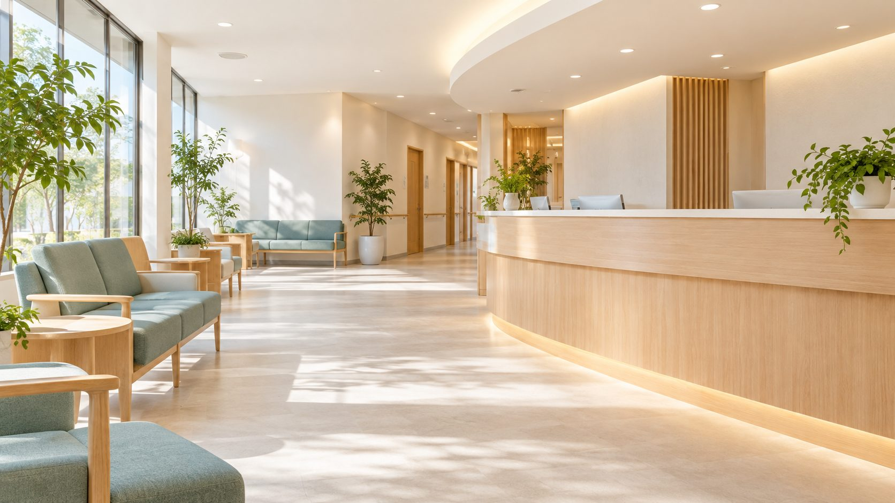
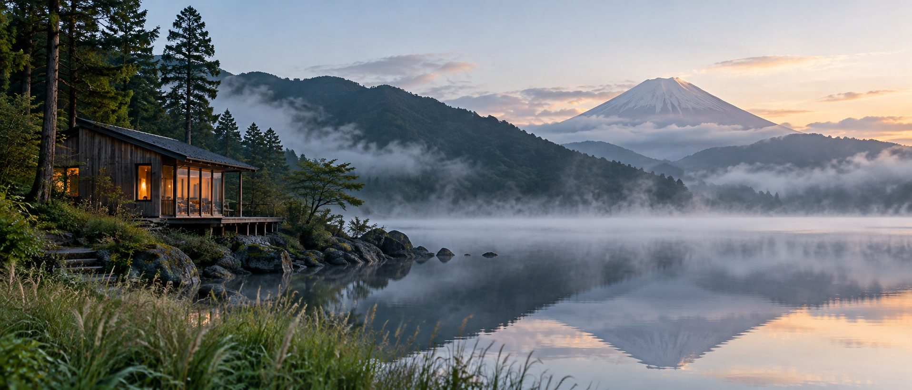
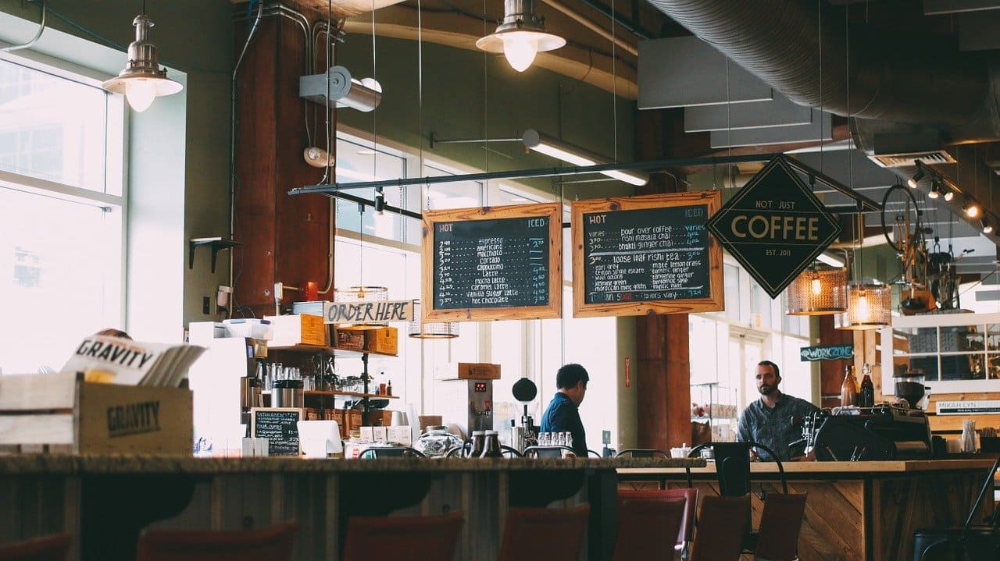

ASTRA
001
ASTRA
Digital space archive
- Web design
- Front-end
2026
Independent portfolio / 2026
新規案件のご相談受付中
Designing clarity
for the web.
01 / Selected works
業種やトーンの異なる7つの制作例です。各ケーススタディで、完成画面だけでなく課題・判断・実装範囲まで紹介します。
001
Digital space archive
2026

002
Florist & online store
2026
003
Seasonal wagashi
2026
004
Analytics dashboard
2026

005
Neighborhood clinic
2026

006
Lakeside cabin stay
2026

007
Cafe multi-page website
2026
02 / Services
01
目的と優先順位を整理し、ワイヤーフレームからUIまで一貫して設計します。
02
デザインの意図を保ちながら、軽く、読みやすく、端末を選ばない画面へ実装します。
03
「何を作るか」が曖昧な段階から、必要なページ・素材・言葉を一緒に定義します。
Typical scope
03 / Process
背景、目的、届けたい相手、制約を整理し、制作の判断基準を決めます。
サイトマップとワイヤーフレームで、情報の順序と動線を検証します。
ビジュアルと実装を往復し、画面幅や操作方法の違いまで整えます。
表示、操作、文章、アクセシビリティを確認し、公開できる状態へ仕上げます。
04 / About
Web designer
& front-end
樋口 翔惺 SHOSEI HIGUCHI
情報量が多いときほど、伝える順番がデザインの質を決めると考えています。内容を丁寧に読み解き、余白・文字・動きに役割を持たせながら、使う人が迷わないWebサイトをつくります。
Webデザインとフロントエンドの両方を扱うため、見た目だけで終わらず、レスポンシブ表示や操作感まで含めて提案できます。